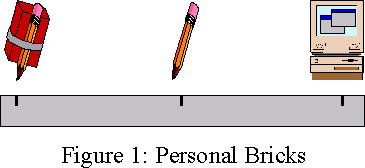
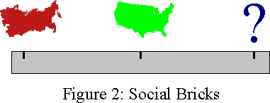
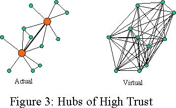
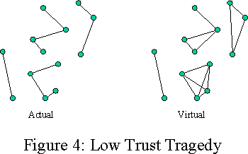
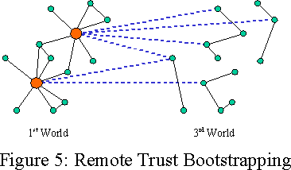
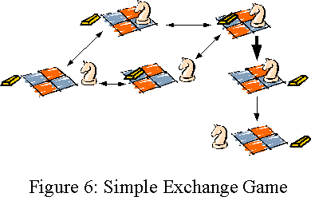
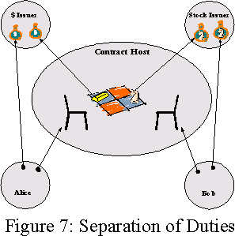
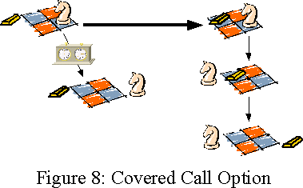
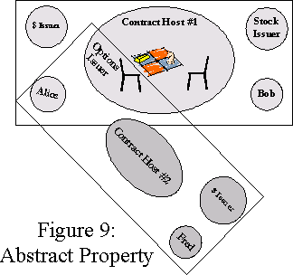

|
The
Pencil, the Brick, and the Law: |
||||||
Draft paper to be submitted to "Austrian
Perspective on the New Economy".
Please comment.
Abstract
*** To be written
Introduction
As Hernando de Soto explains in "The Mystery of Capital" [deSoto00], the poor of the third world (including much of the former communist world) do not suffer from, in his terminology, a lack of assets; rather, they suffer from a lack of capital. Many of the poor around the world do, surprisingly enough, have assets. In a simple exercise, in which de Soto's associates drove around neighborhoods in various poor countries, assessing the value of buildings which were not formally titled, de Soto extrapolated that the value of just the informally owned buildings in the third world amounted to $9.3 trillion -- more than half the combined value of all publicly traded U.S. companies.
De Soto's focus is on the informal sector -- that sphere of economic activity that occurs outside the official formal legal system. Most of the economic activity of the third world's poor occurs in the informal sector. Despite the non-official status of the informal systems of laws and property in this sector, they are nevertheless quite real, and form the foundations on which these informal economies function. However, the formal and informal sectors are not otherwise equivalent. The poor pay a great price for informality -- most of all in the difficulty of capital formation.
As a simple example, the house you live in, from which no one would attempt to evict you, is an asset. The recognition and sense of legitimacy in your local community of your claim to the house makes this asset effectively your property. A mortgage on that house would be capital. (In the countries that have become rich, mortgages in particular have been a major source of highly decentralized investment, seeding many family businesses.) But just because no one can evict you from your house, this does not mean a bank dares accept it as collateral for a loan. The distinction is one of credibility of property rights transfer at a distance, i.e., the ability to engage in binding contracts such that the new owners could be confident they could indeed evict you as part of the contract, despite their distance from your community.
De Soto's offer of hope for the poor is to transition into today's official formal system of law and property, backed by national governments, in order to obtain the benefits of capital formation. De Soto documents well both the high comparative costs of operating formally, and the difficulties of bringing about the transition, but successfully makes the case that the benefits outweigh the costs. Today, there are only these two choices -- informal vs. governmental. Given only these choices, we believe de Soto is advocating the right one, we wish him great luck with his program, and we do not wish to distract those who are able to make this transition successfully. Indeed, we can imagine few more effective programs for improving the overall condition of humanity.
Despite our admiration, this paper takes a different approach; it explores a third alternative, one openned up by new technologies. Because binding contracts for ownership transfer lie at the heart of capital formation, if traditional contracts were supplemented and/or supplanted with smart contracts, which leverage the Net and cryptography for mediating disputes and enabling cooperation among suspicious parties, could such instruments(**?) dramatically increase capital liquidity, spawning a flood of new wealth in the poorest areas of the world? (Given the exponential rate at which the cost of electronics is falling, the cost of the tecnology itself should rapidly become a non-issue, even for the world's poorest.)
Removing the Next Brick
The new technologies of the Net and cryptography present tremendous opportunities for improving the nature of society. But improving society is a difficult task. More generally, improving complex systems is a difficult task. If you cannot figure out which way is up, see if you can figure out which way is down. Doug Engelbart, back in the early 1960s [Engelbart62], wanted to explain to people why interactive systems would make a significant difference to their lives, and augment their ability to express ideas.
In Figure 1, the origin on the axis is what people were doing at the time--writing with pencil and paper. When he found himself unable to communicate how much better things could be, he contrasted their current experiences with how much worse things could be. He tied a pencil to a brick, handed it to people and said, "Okay, now write." People found it very difficult. The unwieldy nature of the tool interfered with their ability to express ideas. With the pencil and brick for contrast, he effectively asked two questions: "What made the difference?" and, "How can we move further in the other direction?" This experiment showed people how important their tools and their media were to their effectiveness, and helped them start to see the next brick to remove. This thought experiment led directly to seminal work responsible for much of the modern world of interactive systems that we now take for granted.
| It is easy to turn an aquarium into fish
soup, --Lech Walesa |
The 20th century performed a similar experiment on a grand scale, tying large bricks to large societies with the best of intentions, but with vastly tragic consequences. Only by learning from this experiment may our good intentions yield better results, and this vast human tragedy will at least not have been in vain. Once we can see the bricks that were tied to these societies, and understand how they precipitated these tragic outcomes, we may see clearly the bricks that remain, and start to imagine their removal as well. Not just to bring the rest of the world up to the standard enjoyed by the first world, but to move past this point as well.
The Brick of Constrained Speech
The most obvious contrast between these two societies is summed up by their common labels: closed societies and open societies. Knowledge evolves well only through a process of open discourse and criticism, in which no official truth is held beyond skeptical re-examination [Bartley62]. Economic activities spontaneously organize through a process of decentralized plan coordination. Open discourse is a crucial part (together with prices) of the means by which economic agents coordinate their plans with each other [Lavoie01]. Constraints on speech in the closed societies placed a burden not only on the individuals in those societies -- this brick made those societies as a whole stupider. When authority can be used to prevent open questioning or negotiation, simple disbelief of officials truths is all that remains.
The brick of constrained speech is in the process of being removed yet again as we speak. The right of free speech, which underpins so much of the strength of western civilization, is being transformed by the Net. In today's Net-enhanced society, freedom of speech is no longer a right which needs to be negotiated between citizen and state; rather, it is a technological fact that accepts no compromise. This new Net-empowered right to free speech is effectively a law, but is a completely jurisdiction free law--even if all the nations of the world agreed that speech should be constrained, no constraint would prevail, as none would be enforceable.
Technological, Jurisdiction-Free Law
The advent of technologically-based, jurisdiction-free law has many ramifications [Lessig99]. Even in the US, where free speech has historically been not merely respected but worshipped, free speech was by common consent still somewhat constrained. The obvious example was the duty not to shout "Fire!" in a movie theater, but the enduring example has been copyright law. Historically America had a good balance between copyright and free speech. But a technological fact has no ability to compromise: there is no one to negotiate a compromise with. So copyright becomes unenforceable even though it has the universal support of all the world's major jurisdictions [Kelsey99].
Technological facts would seem to be morally neutral. Should we expect technological laws in general to be either good or bad? Taken by itself, the loss of copyright is probably an example of a bad consequence. Copyright addresses a genuine externality problem in the creation of new knowledge. Although copyright addresses the problem imperfectly, all the alternatives that remain enforceable seem much worse. The world will probably be poorer for the loss of copyright. (Though it's worth noting that the Net seems to be vastly accelerating the creation and disemmination of knowledge, even as it destroys the conventional incentives for engaging in these activities.)
Despite this negative example, we can expect the new technological laws produced by the Net to be, on the whole, beneficial. Interaction through the Net is inherently coercionless: no one can point a gun at you through your monitor screen. You could send someone a virus, and under today's law that would be considered a use of force. After all, the virus does cause harm to the recipient. But sending viruses is also a form of speech, and under the technological law of the Net, ultimately cannot be constrained. The logic of John Stuart Mill's defense of free speech [Mill69] applies perfectly to this situation.
John Stuart Mill never claimed that "bad" speech could not harm the listener. Rather, he observed a crucial difference between the harm done by speech and the harm done by force. Speech does harm only by virtue of the reaction of the listener. If the listener learns to react differently to a certain pattern of speech, that pattern is rendered harmless. After all, it's only information; it cannot by itself cause damage. The only effective answer to bad speech is more speech, as only this enables the listener to grow from gullibility or cynicism into skepticism.
Likewise, the Net only transmits information -- including viruses. A virus can only do harm based on the reaction -- the means of processing and operation -- of the computer receiving the virus [Hardy99]. The good news is that the damage done by computer viruses (or any malicious bit pattern) is not mandated by technological law, since computer security is possible. The disemmination of viruses cannot be prevented, so the only effective response to their bad bits are other bits -- the software of virus-invulnerable secure operating systems [Hardy85, Shapiro99], programming languages [Hewitt73, Tribble95, Rees96, Miller00], and user interfaces [Walker]. Only such software enables our computers to grow from fatal gullibility or safe-but-useless seclusion into rich cooperation-without-vulnerability with the rest of the electronic world. This growth in turn will enable the removal of the next brick.
(In contrast to a common misunderstanding, the cited works demonstrate that secure computer systems need not be less capable or harder to use than insecure systems. Indeed, it seems the only significant comparative cost paid for security is incompatibility with the installed base. Although this cost is not to be underestimated, the current situation -- in which 13 years olds easily compromise hundreds of fatally gullible computers used by others -- may not be stable, once knowledge of an alternative becomes widespread.)
The Brick of Missing Hubs
So many bricks have been removed, how can third world poverty remain as persistently intractable as ever? Free speech was not enough. The end of socialism was not enough. The universal desire for capitalism has proven to be not enough. The naive view held by many people, including this author when the Berlin Wall fell, was that, once government was out of the way, the market would bloom and take care of the people. This has proven tragically wrong. What else is missing, what other bricks must be removed?
Another important brick is the one that distinguishes low-trust from high-trust societies [Fukuyama95]. Complex cooperative arrangements require trust. The kinds of trust relationships that are possible directly impact what types of business arrangements are possible. Fukuyama makes many highly perceptive observations about different cultural attitudes and proclivities towards trust, and shows how these differences seem to explain some of the observed differences in the patterns of businesses that arise in these cultures.
But to understand how first world societies can successfully function requires something missing from Fukuyama's analysis. After all, in the first world massive numbers of strangers meet, trade, do business, negotiate and sign contracts, despite lack of any prior knowledge of, or reasons to trust in, each other. How is this possible?
De Soto's earlier book, The Other Path [deSoto89], tells a complementary story. De Soto can also be understood as explaining differences in economic organization according to differences in the possibilities for trust. However, de Soto's emphasis is not culture but institutions, and their lack. De Soto's portrayal of the poor within a the third world village is not one of culturally-based low trust. Rather, it is the painful lack of the various widely trusted intermediate institutions (or WTIIs) that catalyze commerce at a distance in the first world, and that we normally take for granted.
Trust relationships can be thought of as analogous to the airport hub and spoke pattern. (Figure 3). Many small local networks are interconnected on a wider scale through major hubs. Although this pattern is a partial centralization, it is not a hierarchy -- there is, for example, no central hub of hubs. Logically, it is peer to peer, but it is built with a backbone architecture due to the economics of the system. The Net itself has mostly the same architecture, as does the highway system. In all cases, a sparsely connected actual network acts for most purposes like a densely connected network. For example, from any airport you can fly to any other airport, almost as if there were flights between every pair of airports.
Similarly, in the first world, two strangers can meet and conduct business as if they had prior knowledge of and trust in each other, by virtue of their reliance on a mutually recognizing backbone of WTIIs. These WTIIs are both in the business of securing these relationships to minimize the risks their customers face from each other, sometimes requiring it to absorb some of these risk onto itself. The economies of scale available to a WTII can help tremendously with these risks. Historically, western societies have developed specialized WTIIs that bundle trust with other expertise: one trusts Citibank not only because Citibank has a demonstrated history of reliably backing their loans, but also because they are experts in loan and risk management, which are necessary elements of reliability in that field: an organization that attempted to engage in banking without expertise in these fields could not be trustworthy no matter how honorable the employees and executives of the organization might be.
Other examples of familiar WTIIs include title companies, insurance, escrow, exchanges and auction houses, underwriters, Consumer Reports, Roger Ebert, notaries, arbiters, courts and cops, money, etc... The list is endless.
From a simple graph-theoretic point of view [Granovetter73], we can analyze the Fukiyama low-trust world (in which the fanout from each node is small) and the de Soto missing-WTII world (in which the hubs are absent), and immediately recognize which brick has the greater impact on a society's effectiveness: it is the absence of the WTIIs that ultimately prevent society-wide trust relationships from forming. No matter what the culture, cognitive limitations prevent each of us from even knowing about, much less trusting, more than a tiny fraction of the members of our society. Even with high cultural proclivity for individual-to-individual trust, in the absence of hubs, the resulting virtual network would at best form small islands of densely connected networks, only loosely connected to each other. The resulting picture resembles both Fukuyama's portrayal of familial trust societies, and de Soto's portrayal of networks of villages of informals.
| The division of labor is limited by the extent of the market. --Adam Smith |
The virtual network of Figure 3 forms one large market with great extent, enabling a great division of knowledge and labor. The virtual network of Figure 4 is one of many separate markets, barely connected to each other, and each individually of minor extent.
But shouldn't this situation be an ideal growth medium for WTIIs? If there is great market need for them, then surely there is great demand and great opportunity. Indeed, this is the situation from which the WTII backbone grew spontaneously in the west. Absent government oppression we should indeed expect it to grow here as well. However, Western-style WTII infrastructures are the result of slow growth processes; they build slowly over time. These widespread trust needed by these institutions can be seen as a form of capital that takes a long time to accumulate.
One of the depressing features of the pictures painted by both Fukiyama and de Soto is that the only hope they see for these societies is home-grown, with each individual third world nation bootstrapping itself through all these steps, including the evolution of their own WTIIs; or the reform and transformation of each society's national government into a system of widely trusted institutions. Well, it took a long time for the west. If they must recapitulate our path, it will take them a long time as well, a time during which desperate poverty will remorselessly prevail. What enablers are available now that were unavailable when the west made this transition? Might these enablers be used to help accelerate today's poor through this part of the process of capital formation?
The Special Role of Title
In The Other Path, de Soto explained the informal economy and its lack of institutions in general. Eleven years later, after much investigation both of the phenomenon of persistent poverty, and an extraordinary uncovering of the history of how the west overcame these problems, in The Mystery of Capital de Soto has narrowed his focus to the crucial role played by the institution of title.
While all these WTIIs are valuable for the fomation of wealth creating societies, not all are equally crucial. De Soto's analysis suggests that the institution most needed to get the ball rolling, and which are most painfully absent in the informal sectors of the third world, are credible systems of title transfer. It is through widely trusted title agencies that banks can become confident that the collateral against which they make a loan will indeed become theirs in the event of default. This requires not just trust in the title company itself, but credibility that a transfer of title on the books will be honored as a transfer of ownership in reality. Title registries with this level of credibility enable rights transfer at a distance: people who have never met one another and probably never will can engage in asset transfers and capital formation with the confidence that they will acquire the goods specified in the contract.
Although de Soto documents the independent creation of title companies in the informal sector, these do not currently seem to be able to provide the credibility at a distance needed for this transition.
The Governmental Paths
Among currently existing choices, perhaps the only organization that can fill this crucial titling role in a nation is the government itself. This is the strategy de Soto has adopted, converting extra-legal assets, village by village, into officially acknowledged parts of the formal economy. The strategy has been wildly successful in bringing the poor into the modern world. Working with the government of Peru, over four years, de Soto's organization has formalized ??? worth of assets for a quarter of a million people, creating ??? amount of capital and $2.1 billion of new tax revenues for the government of Peru. One may hope and expect that these demonstrated tax revenues, if nothing else, will tempt other governments to follow suit.
De Soto's isn't the first attempt to title the informal's property and bring them into the formal sector, but it is the first such attempt in the third world to work. De Soto documents previous well intentioned efforts, with surveyors, geographic information systems, interviews of informals to ascertain who owns what, and formal title registries backed by the formal legal system -- all the obviously necessary ingredients. Why did these previous attempts all fail?
Because the formals did not appreciate that the informals already had worked out system of law, rights, and obligations, negotiated over time and idiosyncratic village by village -- the people's law. Instead, the formals approach to the situation was We have a legal system. You don't. Here's ours. Although the title listings reflected a snapshot of who-owns-what, the legal system governing these title listing did nothing to reflect the complex negotiated informal arrangements needed to understand what rights someone actually held to a particular asset. Given this mismatch, the informals proceeded to ignore the formal title registries and trade assets in the way they always had. The title registries were not updated to reflect changes of actual ownership, and so rapidly became even more irrelevant. De Soto's special insight in this situation has been that the government must discover and respect the local laws, and work out, at considerable cost in time and effort, a way to integrate those local laws with the national systems.
The difficulty comes from an inherent tension between local knowledge and global credibility -- local knowledge of the idiosyncratic people's law, conventions, and negotiated arrangements in force in each village, vs. the need to move the governance of title transfer to WTIIs, whose wide scope requires them to operate from a more homogenized set of rules. This tension is acute on the governmental path, as the homogenized set of rules is not even per title company, but rather the official legal system itself. Governmental legal systems are hardly the wonders of adaptability de Soto's program would seem to require. Even with the best of intentions, an accommodation between the two must rapidly turn into a Procrustean bed. However, de Soto offers no alternative. Though difficult, he is successfully making this path work, and he documents how it did work when formal U.S. law, slowly and painfully, absorbed the informal wild west.
As if this path were not difficult enough, this whole process faces enormous obstacles from many different factions, notably bureaucracies and lawyers within the national sphere that see this as an assault on their prerogatives, as de Soto also documents. The process never becomes easy: each step of progress is another major upheaval in the perceptions and preferences of entrenched groups dedicated to protecting the status quo.
The Digital Path
| National borders aren't even speed bumps on the information superhighway. --Tim May |
Can we sidestep this brutally painful process? Perhaps eventually with the Net.
Due to the Net, purely electronic goods and services can now be purchased from across the world as easily as from next door. Consumers of these goods and services have already escaped old limits of geography and jurisdiction. If the functions provided by various WTIIs were offered by prominent first world trust hubs as purely electronic services, those in need of such widely trusted intermediary services could escape as well -- escape from the crushing assumption that such services can only be provided by institutions beholden to their own governments. Instead, they could reach across the Net to use these services, and begin to bootstrap themselves out of their poverty by participating in the global networks of commerce. (Figure 5)
Many first world trust hubs are already widely known and plausibly trusted in the third world because of the frenetic distribution efforts of western media: shows ranging from CNN to Dallas and Baywatch have granted an aura of respectability to first world organizations that most governments can only envy. (However one may feel about this process, it is occurring, so we may as well put it to good use.) Using first world WTIIs, villages on a global scale could become part of a global trust network. For example, if a person in village A wants to sell a tractor to a person in village D, a couple of villages away, they could easily use a title registry run by Citibank in New York to execute the transfer. In a similar fashion, the tractor may be securitized, transforming it into capital. And in a state such as Russia, a title listing with Citibank would, ironically, have more legitimacy because the titling institution is beyond the reach of their own government.
Once the villages of the world join this global village, it will be much easier for them to grow jurisdiction-free high-trust hubs as well: an entity becomes widely trusted by consistently and visibly performing in accordance with various contracts -- contracts being managed by hubs that are already widely trusted. With a working trust backbone, highly trustworthy behavior gets the visibility it needs to more rapidly accumulate its own reputation-capital.
Smart Contracts
How might such WTIIs deal with the idiosyncracies of each village's people's law, the idiosyncracies that sabotage traditional governmental attempts to capitalize village assets, without taking on the impossible burden of learning all this local knowledge itself, without imposing the costs of homogenization? By the use of smart contracts.
In smart contracts, the program code is an operational embodiment of the contract [Szabo97]. A drink vending machine is a very primitive example of a smart contract, being executed on a contract host: it is the partially trusted intermediary between the drink manufacturer and the purchaser. It escrows drinks and money, and performs an exchange of those goods when both have been presented. There is even a rollback process, in which it returns the money if the drink cannot be delivered. Traditional contracts are understood to be backed by a coercive enforcement system made of courts and cops. However, the vending machine does not have the option of such recourse following a breach. In what sense is it a contract?
The vending-machine-as-contract would indeed require separate enforcement if it dispensed the drink first and then demanded payment. However, by escrowing both drinks and payment before dispensing either, it also dispenses with the need for separate enfocement. Instead of enforcement, the contract creates an inescapable arrangement. It cannot prevent the customer from walking away before the game is over, but a customer who walks away from a contract in progress leaves behind any assets escrowed by the contract at that point [Miller00]. The terms of the contract are enforced by the contract itself -- by the behavior of the contract when executed as a program.
Although conventional coercive recourse is still often possible on the Net, for more and more Net commerce these costs are too great, and the jurisdictional issues potentially too messy. Instead, Net businesses have been engaging in rich and rapid experimentation with cooperative arrangements that require no coercive recourse [WhatsHerName]. The most common arrangements involve not actual escrow, but reputation feedback and credit [Steckbeck01]. This has a similar logic, in that a partcipant effectively secures their good performance with the value of their reputation capital. Such arragements are messier and less amenable to automation than escrow, but they do substantially reduce capital costs. Both kinds of arrangements have their place and will compete in the market. Here, I will explore escrow-based smart contracts, not because I expect this form to dominate, but because their logic is vastly easier to explain; because they're easier to build, and so will occur sooner; and because they apply to participants with no prior reputation, which helps for bootstrapping the transition. Likewise, for the electronic systems of title (or issuers below), in this paper I assume systems that provide for instant settlement [e-gold]. Although delayed settlement may substantially reduce capital costs [Selgin01], they turn smart contracts into explosions of complexity.
Contracts as Games
A basic metaphor for smart contracts is the board game. When two people negotiate a contract, they are jointly designing the rules of a game they would both be willing to play. Once they commit to playing this game, the players may then make moves, but only moves judged legal by the rules given the current board state. Each move potentially changes the board state, changing which moves are legal during the next turn.
For example, Figure 6 shows the six possible board states of a simple negotiation and exchange game. Let's say Alice is playing the left side of the board and Bob the right. The initial board state is the one shown on the far left, in which neither of the pieces is on the board. The gold bar, representing money, is off the board on the left, which portrays its possession by Alice at this time. For concreteness, let's say the knight represents stock. Bob might offer a certain amount of stock to Alice by placing it on the right square of the board. This takes us to the board state that's up and right from the initial state. Alice might not respond soon enough, in which case Bob may withdraw his offer by taking back the knight, bringing us back to the initial state. That's why the first transition arrow is shown as bidirectional.
Or Alice may respond to Bob's offer with a certain amount of money, by placing it on the left square of the board. This takes us to the upper right board state. At this point, either party may still decide they're unsatisfied, withdraw their piece, and reenter the loop of bidirectional arrows. Or, in the upper right board state, Bob may pick up the money offered by Alice. Bob has accepted Alice's offer. This is the irreversible commitment step shown by the bold unidirectional arrow, and takes us to the board state down one. From here, the only possible move is for Alice to pick up Bob's knight.
How is this contract self enforcing? What prevents cheating? Who needs to trust whom with what? To answer these questions, we must start by explaining what is happening on whose computer. We assume that each player trusts their own computer (a dangerous assumption, but we cannot proceed without it). We also assume that player A cannot not trust player B's computer any more or less than they trust player B. Under these assumptions, we can treat a computer and its proprietor as a single unit for purposes of analysis.
The execution of this game actually involves five parties. The two players of course, Alice and Bob. The contract host serves the same role as our vending machine -- it is the third party mutually trusted to execute the contract/program faithfully. The contract can be any program Alice and Bob mutually agree on, written in a safe language suitable for writing smart contracts, that functions as the board manager for the game they have agreed to play. (A board manager for, for example, chess, is a program that enables two people to play with each other, maintains the board state, and only allows legal moves. A board manager does not itself play the game.)
Unlike the vending machine, the contract host need not have any prior knowledge of the contract. Once Alice and Bob agree on the text of a board manager and on a mutually trusted contract host, they upload the board manager to the contract host, which then verifies for them that they've agreed on the same contract, and dispenses to each the right to play their respective sides of the game, shown as the arrows pointing at the respective chairs. The contract can embody the knowledge of acceptable arrangements local to Alice and Bob, local custom, prior handshakes, etc... If the contract host can be trusted at all, it can be trusted to run this contract faithfully, despite its ignorance of the local knowledge that gives this contract meaning. The tension between local knowledge and widespread trust is partially resolved.
(In the vast majority of cases, one would expect Alice and Bob to select a "boilerplate" contract/program off the shelf and fill in the blanks, rather than write a contract/program from scratch. However, the story of the custom contract better shows the logic by which the system operates, and may explain how these shelves will come to be stocked.)
The "$-Issuer" and the "Stock-Issuer" turns the movement of the pieces into a transfer of erights. A $-Issuer, or more conventionally a bank, is effectively a title company for money. For money on record at the bank, the rights to the money changes hands by the transfer of quantity between accounts -- shown above as purses within the issuers. When Alice places the gold bar on the board, her computer, the $-Issuer, and the contract host engage in a three-way cryptographic transaction that bring about the transfer of title, at the $-Issuer, of that much money from Alice to the contract host. An honest contract host would consider this money to be only a piece on the board, which can be picked up (transfered to the possession of a player) according to whatever may be the rules of the game. We refer to this as oblivious escrow.
A dishonest contract host could abscond with the money instead, which is why contract hosts needs to be widely trusted. A widely trusted contract host presumably has a valuable reputation at stake, and this risk helps secure honest behavior. (More sophisticated cryptographic protocols are possible which further limit the player's vulnerability to a dishonest contract host or issuer, but these are beyond the scope of this paper.)
In the arrangement shown here, the $-Issuer, the Stock-Issuer, and the contract host need not have any prior knowledge or trust of any of the other four players. For the game to be meaningful, Alice and Bob must have prior knowledge and trust in both issuers and the contract host, but not in each other. Even if Alice and Bob are both use-once pseudonymous identities with no apparent physical location [Vinge84], under these conditions, they can transact with each other as if they fully trust each other.
Assets + Contracts x Time = Capital
The Smart Contracts explained so far, the vending machine and the exchange game, cannot turn assets into capital. To do so requires contracts that unfold over time, like a mortgage. To explain how such unfolding creates ever more abstract forms of property, a good clear example is the covered call option. (Such instruments are kindergarden finance for many, so excuse us while we belabor the obvious. Re-explaining the familiar is often necessary when translating into a different medium.)
Alice has an option when she has the right, but not the obligation, to engage in some action at some agreed price before some deadline. Alice has a call option when she has the right to buy some agreed asset, let's say stock, at some agreed price before the deadline. The option is a covered call option when Alice's counterparty, Bob, escrows up front the stock Alice may decide to purchase.
We may visualize this as the game shown in Figure 8. In the initial board state, shown in the top left, the stock is already on the board. While in this state, neither Alice nor Bob may pick up the stock. Another "player" in the game, so to speak, is the game clock. Should the deadline expire while in this initial state, the clock causes a transition to a state from which Bob can now pick up his stock and go home.
Or, before the deadline expires, Alice may decide to exercise the option. She may place a gold piece on the left square. Unlike in the previous game, in this game the acceptable amounts are predetermined by the rules. The left square only accepts a certain amount of money. If Alice places this amount of money on the board, this is the irrevocable commitment step shown as the bold unidirectional arrow. After this move, the only remaining legal moves are for Alice to pick up the stock, and for Bob to pick up the money.
What is so different about this contract? During the time between when the game starts (when Alice gets access to her chair) and the time when the game transitions to a new board state (either by expiration of the deadline or by exercise of the option), Alice a something valuable. During this interval, Alice has the option to buy this stock. This is a very different kind of value to have than the stock or money themselves. The value of this new right derives from the value of the stock and the money, but whereas they are very simple literal kinds of rights, this new right is somehow more abstract. In Wall Street terminology, the new right is a derivative of the more literal underlying rights. In de Soto's terminology, if the literal instruments are physical assets, then abstract rights derived by contracts about these instruments are capital.
But there's something missing from this picture. Through the system so far depicted, Alice can trade those rights managed by issuers -- money and stock. The contract host, despite its complete ignorance that it has done so, has created a new valuable right, owned by Alice. But in the picture so far, Alice has no ability to trade this new right. This needs to be repaired, in order for these new rights to truly be capital, and in order for yet more abstract forms of capital to be derived from them.
Networks of Games
What we need, quite simply, is an issuer of this new right Alice holds -- the right to sit in the left chair, in order to be able to play the left side of this on-going game. Since the contract host is already managing access to this chair, it seems natural to have it double as the issuer for the right to sit in this chair. Just as Alice could tell the $-Issuer to transfer some of her money from her purse to some else's, we can enable Alice to tell the contract host to transfer her right to sit in this chair to someone else. The contract host would then revoke Alice's access to the chair, and issue fresh access to the new player, much as the $-Issuer does with Alice's money.
With this ability to compose networks of games, it seems we have the ability to express the full range of contract layering used in modern finance. Not that modern finance is directly relevant to the needs of the poor, but it is a good test of the generality of our framework.
But wait. This structure decouples knowledge in a way quite different than anything in the financial world. We have the contract host issuing rights it does not understand, since these rights are produced by games it runs, but does not understand. The contract host is not in a position to vouch for any meaningful property of the rights it is issuing, so how can widespread trust in the contract host translate into credible global transferability of derived rights? Let's walk through the example depicted in Figure 9.
Alice starts out simply as a player of the original options game, hosted by contract host #1. While Alice finds herself in the resulting valuable situation, she manages to find Fred, who would also find this position valuable. Fred, were he convinced that Alice's chair sitting rights mean what Alice says they mean, would be willing to play a game on contract host #3 in which this right, issued by contract host #1, appears as a movable piece. Unfortunately, having just met, Fred and Alice don't trust each any more than Alice and Bob do. Fortunately, Fred does have prior knowledge and trust of contract host #1. Unfortunately, contract host #1 has no idea if the right to sit in this chair of this game means what Alice claims it means, or anything else.
Fortunately, with Alice's consent, Fred can ask contract host #1 for the text of the contract/program and the current state of the board. In theory, this should be sufficient for Fred to figure out what these derived rights are. Alice, who presumably understands the game she's playing, can help Fred figure this out, and Fred can accept this help, with any trust required between Fred and Alice. Should the contract truly be idiosyncratic to local knowledge shared by Alice and Bob, knowledge to which Fred has no access, he may not find the derived rights comprehensible at reasonable cost and move on. More commonly, if the contract is understandable to some number of others, including some Fred trusts, Fred may turn to them for advice on the contract's meaning -- the computational analog of legal advice.
This provides for a much more complete resolution of the tension between local knowledge and widespread trust. Previous attempts to title the assets of the informals failed because of the illusion that these assets were merely literal simple property -- physical objects or plots of land. De Soto found instead that these assets were already enmeshed in complex negotiated systems of rights, rules, and obligations that needed to be accomodated, in order for a title listing to be considered meaningful. They are more like our option -- a right produced by a negotiated contractual arrangement -- then they are like the underlying physical objects one would point at. Smart contract can capture some sense of these negotiated arrangements. They will still form a procrustean bed of a sort, because not all terms will be expressible to this new language. But homogenization is not needed -- vast variation is expressible within this language, and we may hope that leaves room enough to capture much of the local knowledge and arrangements that would otherwise have been lost.
For whatever aspect of these arrangements does get captured in these smart contracts, by uploading these contracts into widely trusted contract hosts, we achieve credibility of title transfer at a distance. These will create their own pressures for homogenization: Alice did not lose the sale to Fred from lack of trust -- under the stated assumptions, our architecture took care of that. Rather, she may have lost him through her inability to explain what she was selling. But these pressures for homogenization can exerpt their influence, or not, after the basic transition is made.
(If this tale seems implausibly complex, please keep in mind that each of the player is presumed to be participating through a software system well engineered to hide complexity when it can, and make the issues intuitive when it can't. Vastly more complex internal architectures have been made to seem simple and come to be widely used.)
Smart Contracting for the First World
Smart Contracting is not just a good idea for the third world. In technological western civilization as well, smart contracts can wring new efficiencies from the economy. An example can be seen in the way a new special-purpose contract host was able to change the dynamics of the videotape rental industry in the 90s:
When videotape rental first emerged as a business, movie producers charged the rental stores extremely high prices for movies. The rental stores inevitably responded by buying as small a number of copies of each movie as they could, and reusing those tapes as long as they dared. The consequence for the consumer was that videos of newly-released movies were scarce, and the videos of long-released movies were in poor condition.
How did we get to the current state of affairs, in which BlockBuster routinely guarantees availability of brand new movies? By bringing out a new cash register: a cash register that automatically tracked a per-rental fee and transmitted it to the studio. With these cash registers acting as trusted third party contract hosts, the rental stores were able to persuade the producers to change their pricing model. Since the actual manufacture of the video tape was inexpensive, and since the studios were confident that their cut each transaction was protected, the studios began giving the rental stores movies at nominal prices, encouraging the rental stores to maintain quantity and quality at dramatically higher levels.
The Rule of Law, Not Of Men
What does smart contracting do to the next brick? The next brick that must be removed from the world is the brick that prevents the long-distance credible right of property transfer. We remove this brick by moving the village to Cyberspace: placing the local village on the Net, adjacent to the globally recognized WTIIs already present there, and enabling the implementation of smart contracts filled with local knowledge on an impartial contract host continents away. Once this transition takes place, we will see that jurisdiction-based law, even when nation-wide, is crippled in the same way that village-wide law is crippled. The third world will then ironically lead the first world into a brighter place with fewer bricks than society has ever had before. Just as in phone systems, if you have no land line system, you are more likely to leap over such infrastructure development and go directly to cell phones, so too is the third world more likely to leap across national jurisdictional systems, and go directly to the high-efficiency, low friction, strongly impartial, extremely corruption-resistant, non-jurisdictional legal systems of the future. It will bring us a giant step closer to a world governed by the rule of law, not of men.
Acknowledgements
These ideas have formed over much time and many valuable conversations, for which we thank K. Eric Drexler, Charles Evans, Ian Grigg, Robin Hanson, Doug Jackson, Don Lavoie, Zooko (Bryce Wilcox-O'Hearn), Gayle Pergamit, Chris Peterson, Terry Stanley, Nick Szabo, E-Dean Tribble, Bill Tulloh, Ka-Ping Yee, and the members of the e-lang mailing list.
References
[WhatsHerName] "some title about law on the internet" Proceedings of Austrian Perspective on the New Economy, 2001.
[Bartley62] William W. Bartley, III, The Retreat to Commitment Open Court Publishing, 1962.
[Birch] Greg Birch, personal communication.
[deSoto89] Hernando de Soto, "The Other Path", Harper & Row, 1989.
[deSoto00] Hernando de Soto, "The Mystery of Capital", Basic Books, 2000. Chapter 1 online at http://www.ild.org.pe/tmoc/language.htm.
[e-gold] See http://www.e-gold.com/e-gold.asp?cid=101791.
[Engelbart62] Doug Engelbart "Augmenting Human Intellect: A Conceptual Framework", SRI Project no. 3578, October 1962.
[Fukuyama95] Francis Fukuyama, "Trust", Free Press Paperbacks, 1995.
[Granovetter73] Mark Granovetter, "The Strength of Weak Ties", in: American Journal of Sociology (1973) Vol. 78, pp.1360-1380.
[Hardy85] Norm Hardy, "The KeyKOS Architecture", Operating Systems Review, September 1985, pp. 8-25. Updated at http://www.cis.upenn.edu/~KeyKOS/OSRpaper.html.
[Hardy99] Norm Hardy, "Computer Security, the Very Idea". Online at http://www.cap-lore.com/Dual.html.
[Hewitt73] Carl Hewitt, Peter Bishop, Richard Stieger, "A Universal Modular Actor Formalism for Artificial Intelligence", Proceedings of the 1973 International Joint Conference on Artificial Intelligence, pp. 235-246.
[Kelsey99] John Kelsey, Bruce Schneier, "The Street Performer Protocol and Digital Copyrights", First Monday, vol 4, no 6, 1999. Online at http://www.firstmonday.dk/issues/issue4_6/kelsey/index.html.
[Lavoie01] Don Lavoie, "Subjective Orientation and Objective Wealth: Entrepreneurship and the Convergence of Groupware and Hypertext Capabilities", Proceedings of Austrian Perspective on the New Economy, 2001.
[Lessig99] Larry Lessig, "Code, and Other Laws of Cyberspace", Basic Books, 1999. Excepts online at http://code-is-law.org/.
[Mill69] John Stuart Mill, "On Liberty", London: Longman, Roberts & Green, 1869. Online at http://www.bartleby.com/130/2.html.
[Miller95] Mark S. Miller, E. Dean Tribble, Ravi Pandya, Marc Stiegler, "The Open Society and its Media", in Prospects in Nanotechnology, ed. Markus Krummenacker, James Lewis; Wiley, 1995. Proceedings of the 1992 First General Conference on Nanotechnology: Development, Applications, and Opportunities.
[Miller00] Mark S. Miller, Chip Morningstar, Bill Frantz, "Capability-based Financial Instruments", Proceedings of Financial Cryptography 2000, Springer Verlag. Online at http://www.erights.org/elib/capability/ode/index.html.
[Rees96] Jonathan Rees, "A Security Kernel Based on the Lambda-Calculus", (MIT, Cambridge, MA, 1996) MIT AI Memo No. 1564. http://mumble.net/jar/pubs/ secureos/.
[Selgin01] George Selgin, personal communication.
[Shapiro99] Jonathan S. Shapiro, "EROS: A Capability System", Ph.D. thesis, University of Pennsylvania, 1999. Online at http://www.cis.upenn.edu/~shap/EROS/thesis.ps
[Steckbeck01] Mark Steckbeck, Peter Boettke, "Akerlof Problems, Hayek Solutions: Local knowledge and self-enforcement in E-Commerce", Proceedings of Austrian Perspective on the New Economy, 2001.
[Stiegler98] Marc Stiegler, "Introduction To Capability Based Security", Online at http://www.skyhunter.com/marcs/capabilityIntro/index.html.
[Szabo97] Nick Szabo, "Formalizing and Securing Relationships on Public Networks", First Monday, vol 2 no 9, 1997. Updated copy at http://szabo.best.vwh.net/formalize.html.
[Tribble95] Eric Dean Tribble, Mark S. Miller, Norm Hardy, Dave Krieger, "Joule: Distributed Application Foundations", http://www.erights.org/history/joule/, 1995.
[Vinge84] Vernor Vinge, "True Names", Bluejay Books, 1984, Online at http://progoth.resnet.gatech.edu/truename/truename.htm
[Walker] Miriam Walker, Ka-Ping Yee, "Interaction Design for End-User Security", in preparation.
Unless stated otherwise, all text on this page which is either unattributed or by Mark S. Miller is hereby placed in the public domain.
|
|
report bug (including invalid html)
|
||||||||